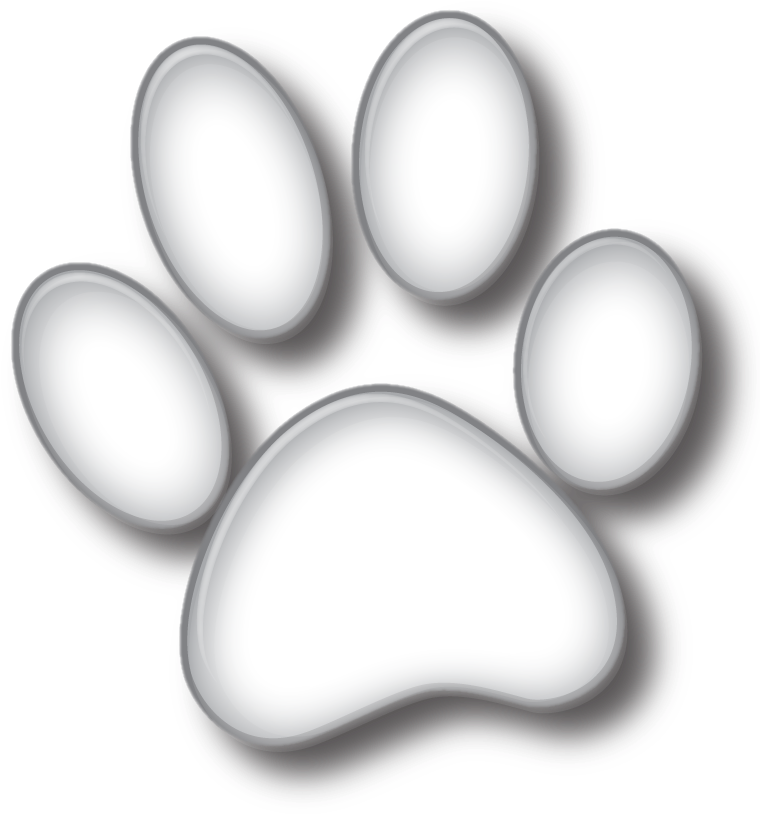

вместо традиционных цветов на свадьбу мы с Айсом предлагаем оказать помощь приюту бездомных животных.
Мы обратились к волонтерам, чтобы узнать, в чем хвостики всегда нуждаются, и какие запросы стоят особенно остро в весенне-летний период. Ниже делимся списком необходимых медикаментов и вещей.
Как говорится, даже самая маленькая помощь лучше большого сочувствия. Мы будем благодарны за любое посильное участие в этом благотворительном сборе! По окончанию нашего праздника мы сами организуем доставку и обязательно поделимся фотоотчетом после поездки в приют.
ПРИЮТУ НУЖНЫ:
- Капли и спреи от иксодовых клещей (особенно актуально сейчас, в весеннее-летний период)
- Средства от паразитов (таблетки от гельминтов для кошек и собак на любой вес/возраст)
- Ранозаживляющая повязка Бранолинд, любой размер (продается только в РФ)
- Ошейники для собак от 35 до 60 см
- Расчески, щетки для животных
- Ошейники для собак (от 35 до 60 см)
- Поводки (длинные, не менее 5 м)
- Консервы мясные для животных, пюре мясные детские
Спасибо вам! 